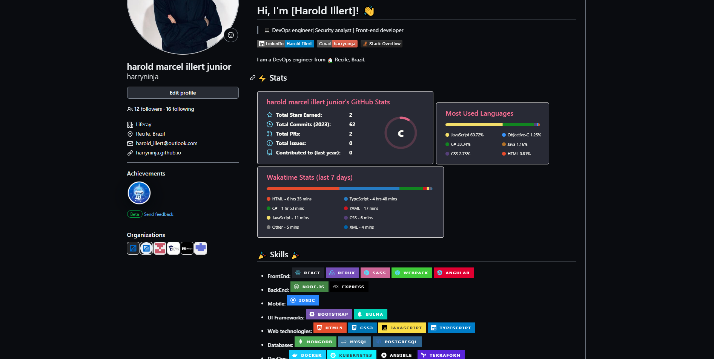

Como eu uso o README do GitHub como vitrine profissional
Com uma carreira espalhada entre full-stack, DevSecOps, cloud, web3, mobile e games, eu aprendi que o README do perfil no GitHub precisa ser simples, direto e mostrar contexto rapido.

Com uma carreira espalhada entre full-stack, DevSecOps, cloud, web3, mobile e games, eu aprendi que o README do perfil no GitHub precisa ser simples, direto e mostrar contexto rapido.
Meu GitHub nao serve so para guardar codigo. Ele funciona como uma vitrine de quem eu sou como desenvolvedor. Como ja trabalhei com Node.js, Python, React, Angular, cloud, Unity e web3, o README me ajuda a organizar essa identidade para quem chega no meu perfil pela primeira vez.
O melhor README de perfil nao e o mais carregado. E o que deixa claro em poucos segundos o que voce sabe construir e em que tipo de problema consegue ajudar.
Normalmente eu separo em resumo profissional, stacks principais, areas de interesse e links diretos. Como meu historico mistura produto, plataforma, cloud e games, tento deixar isso visivel sem parecer uma lista aleatoria.
Se quiser olhar referencias, vale ver este template e tambem meu README atual.
Um guia pratico para usar o README do GitHub como apresentacao tecnica e profissional.
Voltar para os artigos